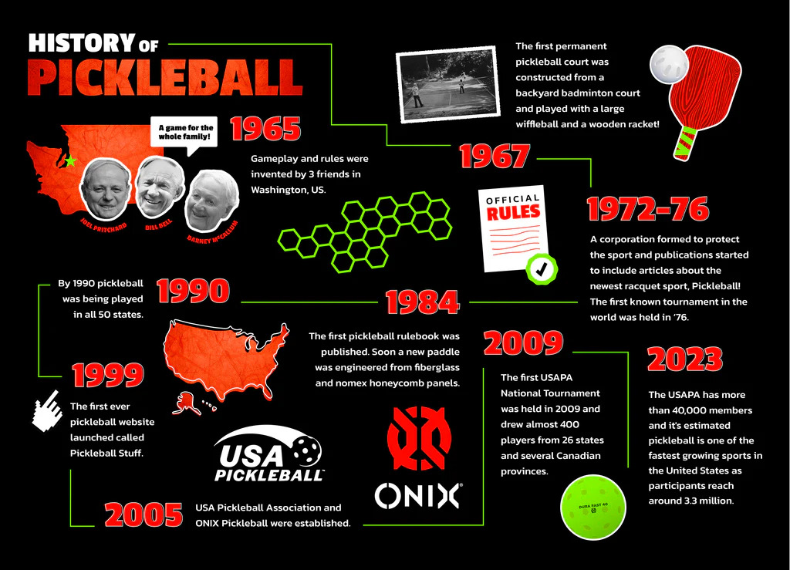
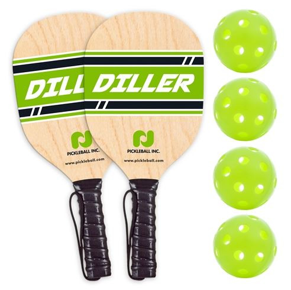

A Semantic Page For: Pickleball
Pickleball
History of Pickleball
Pickleball was born in 1965. After playing golf during the summer, Joel Pritchard, a congressman from Washington, and Bill Bell, a successful businessman, returned to Pritchard's home on Bainbridge Island, not far from Seattle, Washington. With bored children at home, they sought to play badminton on an old badminton court but couldn't find the proper equipment. They improvised and played with table tennis paddles and a perforated plastic ball. They began with the net at a badminton net height (60 inches high) and volleyed the ball back and forth over the net. Eventually as play progressed during the weekend, they found the ball bounced well on the asphalt surface and they would eventually lower the net to 36 inches high. The following weekend, Barney McCallum joined and began playing and the three men created the rules for pickleball. The men remembered the original purpose of creating the game was for a game the whole family could play when they were bored.
How To Play
Equipment Needed
Here's the equipment needed:
Pickleball Paddles
Pickleball Equipment Bag

Wilson Pickleball Equipment Bag – $70
Pickleball Shoes

Wilson Pickleball Shoes – $109.00
Court Line Tape and Boundary Markers